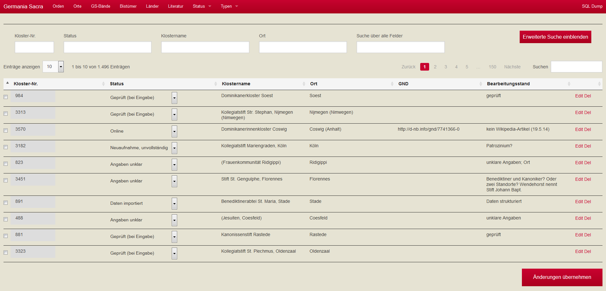
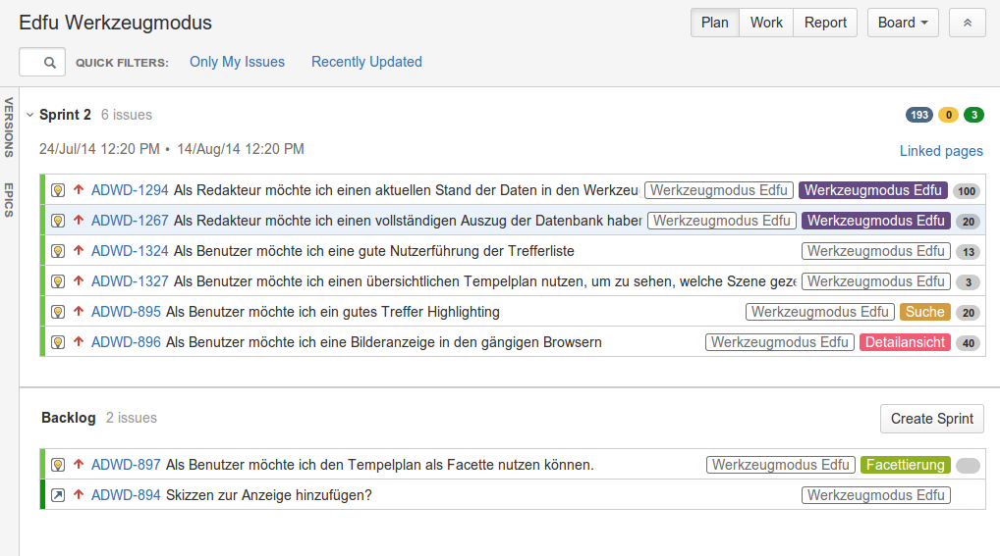
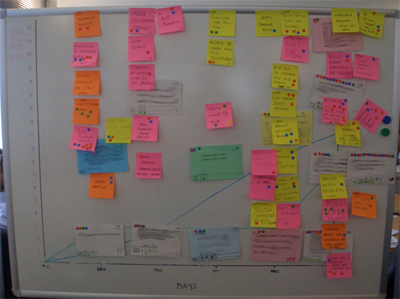

Die Digitale Bibliothek
der Akademie der
Wissenschaften zu
Göttingen
Daniel Beucke und Ingo Pfennigstorf
29. Juli 2014
Vortrag beim
Bibliothekartag 2014
"Die Digital Bibliothek der Akademie der Wissenschaften zu Göttingen" in der Session Kulturelles Erbe - Perspektiven und Herausforderung
Gemeinsam mit AdW-Kollegen Dr. Graeff vom Edfu-Projekt
Folien unter: urn:nbn:de:0290-opus-16377
Die Kooperation
"Im Projekt Akademie der Wissenschaften zu Göttingen Digital wird ein Webportal für die Akademie der Wissenschaften zu Göttingen (AdW) erstellt. Das Portal ist für die AdW das „Schaufenster“ im World Wide Web und ist eine Plattform, auf der von der Akademie ausgesuchte Forschungsergebnisse in elektronischer Form vorgehalten und der Öffentlichkeit zugänglich gemacht werden. Dieses gilt als erste Ausbaustufe einer umfassenden Digitalen Bibliothek der AdW und soll in weiteren Kooperationen ausgebaut werden."
1. Kooperationsphase
2011
Website
&
Repositorium
2. Kooperationsphase
2012 - 2013
Website
&
Repositorium
&
Integration von drei Vorhaben
(Edfu und Germania Sacra)
3. Kooperationsphase
2014 - 2015
Website
&
Repositorium
&
Integration von vier Vorhaben
(Frühneuhochdeutsches Wörterbuch, Gauß, Gelehrte Journale, Handbuch der Höfe und Residenzen, Leibniz)
Die Technik
- TYPO3 – Web Content Management System
- DSpace – Repositorium
- Solr – Index für Daten der Vorhaben
- GitHub – Repositorium für Software
- ...
Das Portal
res doctae
Vorhaben
Mitglieder
Onlinebibliographie
Der Werkzeugmodus
Umsetzung von spezifischen Anforderungen aus den Vorhaben
- Germania Sacra & Edfu
- Dateneingabe bzw. Datenimport
- Präsentation der Daten
- Kartendarstellung
- Umfangreiche Suchfunktionen
- Facettierung
Germania Sacra
Edfu
DIM
Data Input Module
Anforderungen
- Datenimport & Dateneingabe
- verschiedene Grundlagen
- Normalisierung der Daten
Eingabetool für
Germania Sacra

Arbeitsweise
Arbeiten in Teams
Rollen
- Entwickler
- Produktspezialist / Kommunikator
- Moderator / Problemlöser
Arbeitsweise
- Iterativ in 2 - 4 Wochen dauernden "Sprints"
Team Meetings
- Tägliches Statusmeeting (maximal 15 Minuten)
- Sprint Planung
- Sprint Rückblick inhaltlich (Review)
- Sprint Rückblick organisatorisch / Arbeitsweise betreffend (Retrospektive)
Sprint Planung
Tägliches Statusmeeting
Retrospektive
Name of the game
Scrum
Fazit
Der illste Shit

Fragen?!
Daniel Beucke | beucke@sub.uni-goettingen.deIngo Pfennigstorf | pfennigstorf@sub.uni-goettingen.de